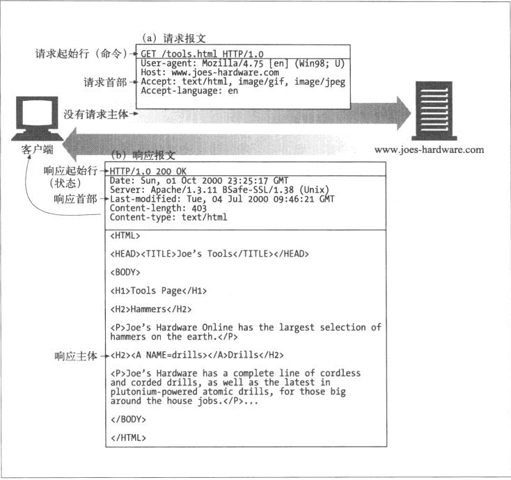

HTTP使用的是可靠的数据传输协议，它总能保证数据在传输过程中不会被损坏或产生混乱。
HTTP服务器和HTTP客户端共同构成了万维网的基本组件。
客户端向服务器发起HTTP请求，服务器就会去寻找期望的对象，若寻找成功将对象的类型，长度一起其他信息放在HTTP响应中发送给客户端。
Web服务器是Web资源的宿主，Web资源是Web内容的源头。所有能够提供Web内容的东西都是Web资源。
HTTP对每个要在WEB中传输的对象打上MIME type 的数据格式标签。MIME在邮件系统中表现的非常好，因此HTTP也采用了MIME，对多媒体进行标记和描述。
MIME是一种文本标记，表示一种主要类型和一个特定的子类型，中间由一条斜杠来分割。
比如：
服务器资源名被称为统一资源标识符 ( Uniform Resource Identifier, URI)， URI有两种形式: URL 、URN
统一资源定位符(URL)是统一资源标识符(URI)的最常见形式，URL描述了一个特定服务器上某资源的特定位置。它可以明确地说明如何从一个精确、固定的地址获取资源。
大部分URL都遵循一种标准格式，包含三个部分：
现在，几乎所有的URI都是URL
URI的第二种形式是统一资源名URN，URN是作为特定内容的唯一名称使用的，与目前的资源所在地无关。使用这些与位置无关的URN，就可以将资源四处搬移。通过URN，还可以用同一个名字通过多种网络访问协议来访问资源。
URN目前仍然处于试验阶段，还未大范围使用。
一个HTTP事务
HTTP报文是由一行一行的简单字符串组成的。报文是纯文本不是二进制代码，所以人们可以方便的读写。
一个简单的报文实例为例，HTTP报文包括三个部分：
起始行、首部字段、主体

HTTP是个应用层协议。HTTP无需操心网络通信的具体细节，它把互联网的斜街都交给了通用、可靠的因特网传输协议TCP/IP。
TCP/IP提供了：
通过URL获得HTTP服务器的IP地址和端口号。
浏览器通过HTTP显示位于远端服务器中的某个HTML资源的步骤：
现在使用的HTTP有几个版本。HTTP应用程序要尽量强健地处理各种不同的HTTP协议变体。目前仍在使用的版本有：